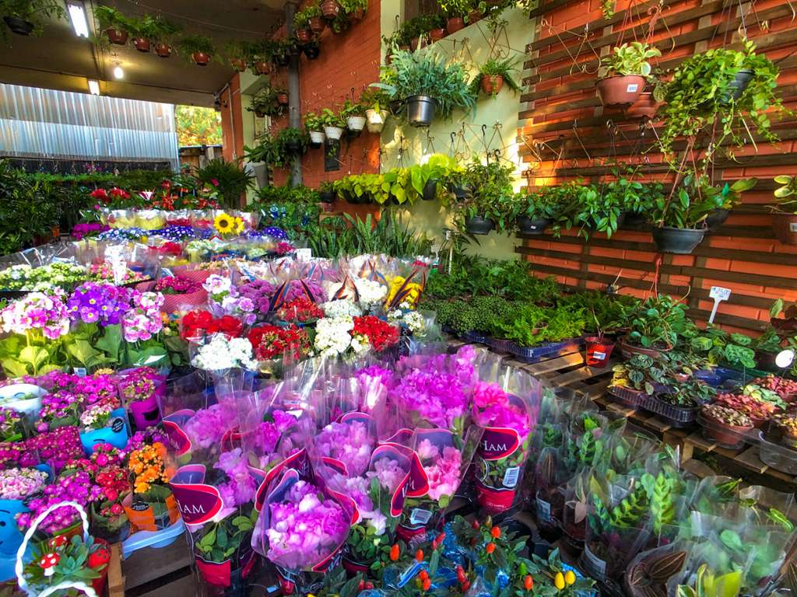

Flower Knows
Como começou tudo
Desde 1928, a empresa da família Lara produz flores e/ou plantas na rua Galvão Bueno, na Liberdade, em São Paulo. No início, eram principalmente lírios e crisântemos. Quando Antônia Lara funda sua empresa em 1963, ocorre uma grande mudança. A empresa cresce a ponto de se tornar a mais importante produtora de flores de São Paulo. Antônia e Antônio Gomes seu atual esposo e dono de uma pequena floricultura, chamada "Dengo de Flor". Entre eles e suas empresas surge uma grande afinidade. Essa colaboração bem-sucedida propicia que, na década de 80, as empresas sejam unidas, convertendo-se na atual Flower Knows.

As flores que mais trabalhamos: